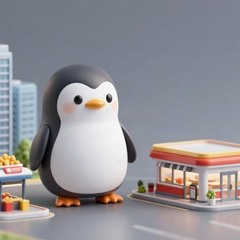

📝 下書き 160本
2026年10月5日時点。ここは、まだ本番に出していない記事の置き場です（英語と日本語だけ）。
完成の形を見ながら直して、「本番に出して」で公開します。検索には出ません。
🎯 1000本まで：公開 191 ＋ 下書き 160 ＝ 351本
公開 191下書き 160あと 649本
✏️ 少し直せば出せる 14本
本人に1つ確かめるか、仕事の言葉を消せば出せるもの

バギオでは、いちばん厳しい学校を選んだ
In Baguio, I chose the strictest school

大学見学2日目：Sunway College
University visit, day 2: Sunway College

24歳から、運気が上がるらしい
My luck seems to go up from age 24

2026年、私の好きな外国人ランキング
My ranking of favorite foreigners in 2026

オリバー・バークマンのブログが大好き。本に17,000円払った
I love Oliver Burkeman's blog, and I have paid 17,000 yen for his books

仕事で難しい資料を読むコツ②：ちゃんと左から読む
Another tip for difficult documents at work: read each sentence from the left

仕事で難しい資料を読むコツ：目次だけを読む
A tip for difficult documents at work: read only the table of contents

あそこで作った料理でいちばんおいしかったのは、キャベツと黒こしょうだった
Cabbage with black pepper was the best thing I cooked out there

立って仕事をしていたら、話しかけられるようになった
I worked standing up, and people started talking to me

祝日が続いたせいで土曜出社になり、みんなで手で食べるごはんを囲んだ
A run of holidays meant a Saturday shift, and a table of food we all ate with our hands

フィリピンでは、人前で叱ることはタブー
In the Philippines, scolding someone in front of others is a taboo

ぐちゃぐちゃのメモを整理するのが、意外と楽しかった
Tidying up my messy notes turned out to be fun

「ちゅ」の2文字で、かんたんな説明をお願いできるように辞書登録した
I typed 2 letters into my dictionary to ask for a simple explanation

話しながら考えられないので、先にチャットを送る
I cannot talk and think at the same time, so I send a chat first
🏭 業界の話として出せそう 12本
会社が分からない、業界の一般的な話。続けて出さない・シリーズでつなげない

新人に教えていて気づいた、この1年で覚えたWindowsのショートカット
Teaching a new person, I noticed the Windows shortcuts I learned this year

PMが作ったバッファには、文句を言わずに従うことにした
I decided to follow the buffer the PM made without complaining

話したあと、同じことをチャットに打って、スタンプを待った
After talking, I typed the same thing into chat and waited for a stamp

日本語から英語より、英語から日本語のほうがずっと難しかった
English into Japanese was much harder than Japanese into English

日本の会社がアプリ開発を海外に頼む理由と、ブリッジSEが間に入る理由
Why Japanese companies have apps built overseas, and why a bridge engineer sits in the middle

スマホは宇宙と通信していると思っていた
The radio from your phone only reaches the pole nearby

この仕事をして、NTTに感謝するようになった
The countryside has internet thanks to one company

毎月のWindows Updateの日は、ネットワークが逼迫する
The network gets tight on Windows Update day every month

予備の機械は、誰かが設定を入れるまで動かない
A spare machine does not work until someone puts the config in

板が1枚ゆるむだけで、樽の水は全部漏れる。研修でそう教わった
One loose plank makes the whole barrel leak, they taught me in training

資料を見ながら、「たぶんネズミがケーブルをかじった」と推理する
We look at the papers and guess that maybe a mouse chewed the cable

障害はたいてい、雷のあとに機械が立ち上がるときに起きる
Faults usually happen when the machines come back up after lightning
💼 仕事の話（業界の話に書き直してから） 36本
ブログ憲法 第1条：会社と仕事の中身は書かない。多くはこのまま置いておく

派遣社員は、怒られる道も、意見を言う道も2本ある
As a temp worker, there are 2 roads to get scolded, and 2 roads to speak up

派遣社員は、3か月ごとにちょっとドキドキする
As a temp worker, my heart races a little every 3 months

職場の人に、お別れ会を開いてもらった
My team held a farewell party for me

夜勤の体力は、朝7時をすぎると回復する
On night shifts, my energy comes back after 7 AM

夜勤の日はコーヒー1.5リットル、体がぶるぶるする
On night shifts I drink 1.5 liters of coffee, and my body starts to shake

日勤と夜勤の二交代制で働くと、毎月8連休がある！
If you work two shifts, day and night, you get 8 days off in a row every month!

ブリッジSEをしていて、いちばん嬉しかった3つの瞬間
The 3 moments that made me happiest as a bridge engineer

日本人が自分ひとりの案件が、いちばんやりがいがあった
The projects where I was the only Japanese person were the most rewarding

エンジニアの30分は、お客さんがお金を払っている時間
An engineer's 30 minutes is time the client is paying for

自分がわかっていないことは、説明できなかった
If I did not understand it myself, I could not explain it

いちばん楽しかったシフトは、野球の大会の日だった
The day of the baseball tournament was the best shift

やりとりする相手は、3種類いる
There are 3 kinds of people I deal with

直したら終わり、じゃなかった
Fixing the fault is not the end of it

ベテランでも、手順書を開きながら仕事をしている
Even the veterans work while looking at the manual

IP電話は上に登らず、横に進む
An IP phone does not have to climb to the top

パソコンの中から、別のパソコンにログインする
I log into about 5 computers in one day

川みたいになった道を歩いて出勤した
I walked to work through a road that had turned into a river

部署が細かく分かれすぎていて、誰に聞くかをまず確認する
The departments are split so finely that I have to check who to ask

職場ではみんなに「借用とった？」と聞かれる。回線を借りる、という意味
Everyone at work asks if I got the shakuyou, which means borrowing a line

ネットワーク運用保守は、実際に人を現場へ送る仕事でもある
Network operations also means sending a real person out to the site

わからないときは、考える前に過去の記録を検索する
When I do not know something, I search the old records before I think

大企業だと、同じビルが知らない人だらけ
In a big company the same building is full of people I do not know

質問は予約メッセージで、13時と17時半にまとめて送る
I send all my questions at 1pm and 5:30pm using a scheduled message

私のお客さんは企業で、1秒止まるだけで工場が止まることもある
My customers are companies, and 1 second of downtime can stop a factory

仕事の資料は、1枚も家に持って帰れない
I cannot take a single page of work material home with me

保守員さんがレジの下の箱を見つけられるように、地図を描く
I draw a map so the field worker can find the box under the register

電話のネットワークで、私の担当は真ん中だけのこともある
In a phone network my part is sometimes only the middle

正社員の人と同じチームで、同じ役割をしている派遣社員です
I am a temp worker in the same team and the same role as permanent staff

仕事の半分は作業、半分は記録
About half of my job is doing the work and half is recording it

電柱からケーブルが垂れていたら、警察署にファックスを送る
When a cable hangs down from a pole, I fax the police station

大きな障害のあとは、全員が何時何分に何をしたかを書く
After a big fault everyone writes down what they did at what minute

「ダブルチェックお願いします」を、だいたい15分に1回言っている
I say please double check about once every 15 minutes

はじめての大企業は、長い年月で作られたやり方を学ぶ学校みたいだった
My first big company felt like a school, where I learned a way built over many years

正しいパスワードを探すだけで、5分10分が溶けていく
5 or 10 minutes melt away just finding the right password

帰る前に、明日の手順書を開いておく
Before I go home, I open tomorrow's manuals

手順書を覚えるのをやめて、リンクだけ持つことにした
I stopped remembering the manuals, and keep only the links
🗂 そのほか 88本

褒められる量が増えると、批判される量も増える
When you get more praise, you also get more criticism

嫌われても、それは相手の好みの問題
If someone dislikes you, it is just a matter of their taste

「ガッカリした」「友達でしょ？」は、思い通りにしたいだけの言葉
Words that make you feel guilty often just mean "do what I want"

「誰とでも仲良く」はしなくていい。少し距離をおけばいい
You do not have to get along with everyone, just keep a little distance

完璧より「ちょっとダメだけど明るい」がいい
A little bad but cheerful is better than perfect

好きでやっていることにご褒美をあげると、楽しさが消えることがある
A reward for something you love can kill the fun

まず気持ちを受けとめて、それから話す
Feel it with them first, then say what you need to say

「〜しないで」より「〜してね」と言う
Say "please do this" instead of "don't do that"

叱る前に、まず理由を言う
Before you scold someone, say the reason first

心配しすぎの言葉は「あなたを信じていない」に聞こえることがある
Too much worry can sound like "I don't believe in you"

気楽に生きるために、やめる4つのこと
Stop 4 heavy things, and life gets lighter

ボールを投げるまでが「私の領域」。手をはなれたら気にしない
Your part ends when the bowling ball leaves your hand

よく見せようとすると疲れる。自然体で、でもていねいに
Trying to look better makes you tired, so be natural but polite

嫌なことの8割は「どうでもいい」こと
Most bad things do not really matter, so say "Who cares!"

週に合計2時間くらい自然にふれると、考えすぎが止まりやすい
About 2 hours of nature a week helps you stop thinking too much

「決める」と、終わらない脳内会議が止まる
When you decide, the endless meeting in your head stops

考えがぐるぐるしたら「今できることは何？」と聞く
When your thoughts go round and round, ask "What can I do now?"

「〜だけど」でつなげると、どんな場所にもいいところがある
If you connect with "but," every place has a good side

嫌なことは「Z型」に考えて、いい意味に折り返す
Turn a bad thought into a good one by thinking in a Z shape

出来事×思い込み＝感情。変えられるのは思い込みだけ
Your belief about an event decides your feeling, so change the belief

イライラの4大原因は、嫌な出来事・寝不足・時間がない・空腹
Most irritation comes from 4 things: bad events, sleep, time, and hunger

イライラはうつる。イライラしている人には近づかない
Irritation spreads to others, so keep away from irritated people

「あなたは！」より「わたしは〜だと助かる」で伝える
Start with "I" instead of "you," and your request is easier to hear

「〜すべき」は人によって違う。ムッとしたら「こんな人もいる」とつぶやく
Each person has a different "should," so whisper "there are people like that"

困ったときに「おもしろくなってきた」と言うと、強くなれる
Say "this is getting interesting" when trouble comes, and you feel stronger

自分の欠点を先に言っておくと、人に言われても平気
Say your weak point first, and it will not hurt when others say it

自分の機嫌を自分でとると、人に優しくなれる
Take care of your own mood, and you can be kind to others

怒りに点数をつけると、それ以上大きくなりにくい
Give your anger a score, and it stops growing bigger

人間はもともと不完璧。最初から期待しすぎない
People are imperfect from the start, so do not expect too much

怒りの正体は「期待ハズレ」。期待を下げると、感動が増える
Anger comes from broken expectations, so lower them to feel more wow

「悪いけど」を付けると、頼みごとや断りが言いやすくなる
Adding "sorry, but" makes it easier to ask or say no

人と同じくらい、自分のことも大切にする
Take care of yourself as much as you take care of others

多くの人は役に立ちたくて、頼まれるのを待っている
Many people want to help, and they are waiting to be asked

人は長所で尊敬され、短所で愛される
People respect your strengths, but they love your flaws

相手の言葉をオウム返しすると、本音が出てくる
Repeat their words back, and their real feelings come out

悩みを聞くときは、共感 → OK → アドバイスの順番で
When a friend shares a worry, listen with empathy first, then advice

「ラーメンがいい」くらいの、小さな自己主張から練習する
Start practicing with small wishes, like saying what you want to eat

「本気」は一目置かれて、「必死」はバカにされる
Being serious earns respect, but being desperate makes people look down on you

2秒で堂々とした姿勢に。息を吸って、あごを引いて、微笑む
Stand tall in 2 seconds: breathe in, pull in your chin, and smile

少し大きな声で、ゆっくり話すと、軽く扱われない
Speak a little louder and slower, and people will not take you lightly

褒める3に批判1くらいなら、「正直な人」
Praise 3 times for every 1 criticism, and you are an honest person

聞かれていないアドバイスは嫌われ、アドバイスを求める人は好かれる
Advice nobody asked for is disliked, but asking for advice is liked

すぐに心を込めて謝ると、ミスが信用に変わる
Say sorry fast and from your heart, and a mistake becomes trust

「みんな同じでいてほしい」が強すぎる人とは、ゆっくり距離をとる
Slowly step away from people who want everyone to be the same

どんな集団でも、気が合う2割・どちらでもない6割・合わない2割
In every group, 2 people match you, 6 are neither, and 2 do not

マイナスの言葉が多い人とは距離を置き、プラスの言葉が多い人に近づく
Step back from people with minus words, and get close to plus words

怒りは溜めずに、一人のときに小声で吐き出す
Do not keep anger inside; let it out in a small voice, alone

感じよく、でも無理なことは礼儀正しく断る
Be friendly, but say no politely to things you cannot do

からかわれたら、「そうだよ」と乗ってしまえばいい
When someone teases you, just say "Yes, it is!" and play along

毒のある言葉は、受け取らなくていい
You do not have to accept poison words from other people

1日3回「ありがとう」と言われるゲーム
A daily game: try to hear "thank you" 3 times a day

親切は銀メダル、気が利くは金メダル
Being kind is a silver medal, and noticing first is gold

人にしたことは、山びこのように返ってくる
What you do for others comes back to you like an echo

最初は親切に、裏切られたらお返し、ときどき許す。これが最強のルール
Be kind first, copy back, and sometimes forgive: the winning rule

うまくいく「与える人」は、奪う人には優しくしない
Top givers are kind, but not to people who only take

何でも引き受けると、都合よく使われてしまう
If you say yes to everything, people start to use you

小さなお願いをする人は、大切にされる
Ask for small favors, and people come to like you more

「ありがとう」のあとに気持ちを足すと、もっと伝わる
Add your feeling after "thank you," and it reaches people more

「当たり前」をやめると、「ありがとう」が増える
If you stop thinking things are normal, you say thank you more

「ありがとう」は少ないから、言える人はキラッと光る
Saying thank you is rare, so people who say it really shine

最後をプラスで締めると、印象がよくなる
End your sentence with the good part, and you sound kinder

本人がいないところで褒めると、何倍もうれしく届く
Praise people when they are not there, and it reaches them bigger

「すごい」「なるほど」「おもしろい」で、相手の心が開く
Saying wow, I see, and interesting opens people's hearts

雑談は、ちゃんとした話よりくだらない話がいちばん
Small talk does not need smart topics; silly talk is the best

名前を呼ぶと、距離がぐっと近くなる
Call people by their name, and you get closer

あいづちのあとに質問すると、会話が広がる
Ask a question after you nod, and the talk keeps going

思ったことをネタ帳に書くと、話のネタが浮かぶ
Write small thoughts in a notebook, and topics come to you

会う前に質問を1つ決めておくと、緊張しない
Decide one question before you meet, and you will not get nervous

「教えてもらおう」と決めると、雑談がラクになる
Decide to learn from people, and small talk becomes easy

頭の中で実況すると、言葉がすっと出るようになる
Commentate in your head, and words come out easily

自分から近づいて話しかける人は、かわいく見える
People who come over and talk to you first look cute

雑談していると、相談や紹介のチャンスが回ってくる
Small talk brings you little chances, like advice and introductions

雑談している人は、同じミスでも許される
People who chat every day get forgiven for the same mistake

雑談は、仲よしの貯金
Small talk is like a savings account for friendship

「好かれよう」より「目の前の人を元気にしよう」
Cheer up the person in front of you instead of trying to be liked

明るい声だと、大切にされている気がする
A bright voice makes people feel cared for

最初と最後の挨拶ができていれば、間の小さな失礼は許される
Say hello and goodbye well, and small mistakes in between are forgiven

目が合うまで、笑顔を続ける
Keep your smile on until your eyes meet

いい挨拶の3つのコツ：笑顔・自分から・名前
3 tips for a great hello: smile, go first, and say their name

挨拶のしかたで、「好き・嫌い」がこっそり伝わる
The way you say hello quietly tells people if you like them

返事の「はい」は0.1秒で。声の大きさよりスピードが大事
Say "yes" in 0.1 seconds: speed matters more than a loud voice

マクドナルドには、直営店とフランチャイズがある
McDonald's has company-run stores and franchise stores, and they feel different
名古屋のマクドナルドは、ウーバーイーツがすごい
At McDonald's in Nagoya, Uber Eats orders were amazing
マクドナルドのバイトで一番好きだったポジション
My favorite position at my McDonald's part-time job was "runner"
マクドナルドでは、辞めることを「卒店」と呼ぶ
At McDonald's, quitting your job is called "graduating from the store"

空港での生徒のお迎えは、暑さとの綱引きだった
Picking students up at the airport was a tug of war with the heat

初日にオーナーから「お前の仕事はエージェントと友達になることだ」と言われた
On my first day the owner said my job was to become friends with the agents

フィリピンと日本で働いて感じた違いは、人の多さだった
Working in the Philippines and Japan, the difference I felt was how many people there were
🔒 出さない 10本
第1条・第2条に近いもの、または本人の判断待ち
今の日本の大企業、すごいと思ったこと
Something that impressed me about big Japanese companies today

書いている本人から、日本語で読んでくれている人へ一言
A message from the owner to people reading in Japanese

日本人がひとりだけの私を、社長は気にかけてくれた
The boss worried about me being the only Japanese person there

クラーク空港には毎週行っていたので、はっきり覚えている
I went to Clark airport every week, so I remember it clearly

生徒が持ってきてくれた手紙やお土産が、うれしかった
The letters and gifts students brought me made me happy

議事録を1分で作ったら、周りに驚かれた
People were surprised when I made the meeting minutes in 1 minute

夜は静か。アラームが鳴るまでは
The night is quiet until an alarm goes off

ホームページに障害のお知らせを書くのも、私の仕事
Writing the outage notice on our website is also part of my job

机にモニターが3枚、壁にはさらに12枚くらい
I have 3 monitors on my desk and about 12 more on the wall

質問したら本当に障害だった。それでシールをもらった
I got a sticker for asking a question that turned out to be a fault
💡 AIへの頼み方
「下書きにして」→
「本番に出して」→
本番から下書きに戻す →
「下書きにして」→
python3 tools/draft.py new <slug> で作って push（英日だけ・表紙はあとでいい）「本番に出して」→
python3 tools/draft.py publish <slug> → 表紙の生成・英日韓中の訳・いつもの手順で push本番から下書きに戻す →
python3 tools/draft.py move <slug>